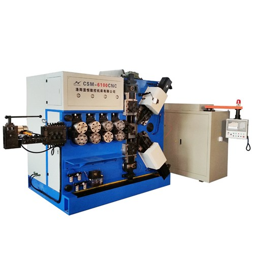

Maintenance Regulations For CNC Electrical Systems
2020-01-19 10:31:40
- TAG :
1. Strictly abide by the operating regulations and routine maintenance system
2. Open the doors of CNC cabinets and strong electrical cabinets as little as possible → Oil mist and dust can easily cause the insulation resistance of components to decrease, and even cause damage to circuit boards or electrical components
(1) In the summer, in order to make the CNC system work overtime for a long time, it is necessary to open the door of the CNC cabinet to dissipate heat, which will eventually lead to the accelerated damage of the CNC system.
(2) The correct method is to reduce the external ambient temperature of the CNC system.
Note: Unless necessary adjustments and repairs are performed, the doors of CNC cabinets and high-voltage cabinets are not allowed to be opened at will.
(3) Some circuit boards and connectors that have been contaminated by external dust and oil mist can be sprayed with special electronic cleaners.
Note: The naturally dry liquid spray table forms an insulating layer on the non-contact surface to make it well insulated.
3. Regularly clean the cooling and ventilation system of the CNC cabinet
(1) Check whether the fan on the CNC cabinet works normally every day.
(2) Check the air duct filter for blockage every six months or quarter.
Note: The temperature in the CNC cabinet is too high (generally not allowed to exceed 55 ° C), causing an overheating alarm or the CNC system: the operation is unreliable.
(3) Cleaning method
1) Unscrew and remove the air filter;
2) While gently vibrating the filter, use compressed air to blow away the dust in the air filter from the inside out;
3) When the filter is too dirty, it can be washed with a neutral detergent (detergent and water formula is 5/95) (but not rubbed), and then placed in a cool place to dry.
4. Pay attention to the regular maintenance of the input / output devices of the CNC system (such as magnetic heads)
5. Frequently monitor the grid voltage of the CNC system (85% ~ 110%) → check frequently

6. Periodically replace the battery for storage (lithium battery, nickel-chromium battery → rechargeable)
(1) Regularly check the battery voltage and replace it once a year (in general, even if it has not expired, it should be replaced once a year to ensure that the system works properly).
(2) The battery replacement should be performed under the power supply of the CNC system, so as not to lose the parameters in the RAM.
7. Maintenance of CNC system when not in use for a long time
(1) Power on the CNC system often:
a. Check whether the battery voltage is too low and whether there is an alarm; if so, replace the backup battery in time.
b. Dry running and dehumidification to prevent moisture or short circuit of electrical components or printed boards: power on more than twice a week; power on every day in the rainy season
(2) For DC motors, take out the brushes to prevent corrosion of the commutator → ensure commutation performance.
8. Maintenance of spare circuit boards
The spare circuit board is regularly installed on the CNC to be powered on to avoid damage.
9.Maintenance and maintenance of common relay and contactor control systems
① Take measures to prevent strong electromagnetic interference from contactors and relays in the strong electrical cabinet.
The AC motor starts and stops frequently. The electromagnetic induction phenomenon causes the CNC system control circuit to generate noise such as spikes or surges, which interferes with the system's operation. For example, the RC network is connected in parallel at both ends of the AC contactor or the three-phase input end of the motor.
② Prevent oxidation and poor contact of contactors and relay contacts.
10. Make preparations before repairs
Spring machine failure occurs → Emergency stop, protect the site → Prepare for maintenance (technical preparation tool preparation spare parts preparation)